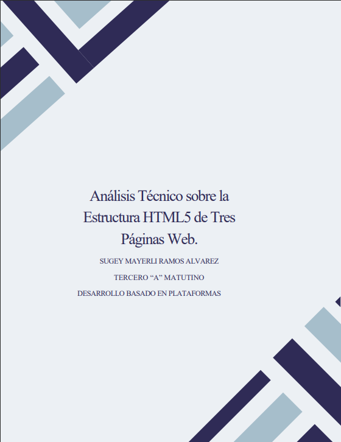

Inicio
Hola, mi nombre es Sugey Mayerli Ramos Alvarez, estudiante de la carrera de Ingeniería en Sistemas de Información de la Universidad Técnica de Babahoyo, con una pasión por el diseño y la escritura creativa.
Sobre mí
Soy una persona responsable y versátil, con habilidades en liderazgo y una capacidad destacada para comunicarme con precisión. Actualmente curso el tercer nivel de la carrera, lo que me ha proporcionado una base sólida en desarrollo de software y estructuras de datos. Paralelamente, la escritura de poesía es una de mis pasiones. A través de las palabras, expreso mis emociones y experiencias, creando imágenes vívidas que reflejan mis vivencias.
Habilidades
| Habilidad | Nivel | Descripción |
|---|---|---|
| Experiencia en HTML | Básico | Conocimientos fundamentales en la creación de páginas web usando HTML. |
| CSS | Básico | Diseño y maquetación de sitios web responsivos. |
| JavaScript | Intermedio | Implementación de funcionalidades dinámicas en sitios web. |
| Desarrollo de escritura | Intermedio | Habilidad para crear contenido con claridad y expresión efectiva. |
| Gestión de proyectos | Avanzado | Liderazgo y colaboración constante, activa y eficiente en proyectos grupales y otros. |
| Gestión del Tiempo | Intermedio | Cumplimiento de tareas y objetivos a corto plazo de manera organizada y precisa. |
Galería de Proyectos
Análisis Técnico sobre la Estructura HTML5 de Tres Páginas Web
Este análisis examina la estructura HTML5 de tres páginas web, destacando el uso de etiquetas semánticas y prácticas de accesibilidad. Evalúa el uso de etiquetas como (header), (section), (figure), y atributos como aria-*, que mejoran la organización, accesibilidad y optimización para motores de búsqueda. También proporciona recomendaciones para mejorar la experiencia del usuario y el rendimiento de las páginas web.
Sistema de Gestión de Estudiantes
Este documento describe un ejercicio de implementación para un sistema de gestión de estudiantes en la Universidad Técnica de Babahoyo. Incluye enlaces para acceder al código en la plataforma Replit, donde se desarrolla el sistema. El objetivo es gestionar la información de estudiantes y mejorar la organización académica.
Análisis: Introducción al Frontend y Backend
Este documento explica las diferencias entre frontend y backend en el desarrollo web. Describe las tecnologías de frontend (HTML, CSS, JavaScript) enfocadas en la experiencia del usuario, y las de backend (PHP, Python, Java, NodeJS) que procesan datos en el servidor. También menciona stacks como LAMP y MEAN y el perfil de desarrollador Full Stack, que domina ambas áreas. Incluye un análisis crítico sobre la elección de tecnologías según el proyecto y sugiere ejemplos prácticos para una mejor comprensión.